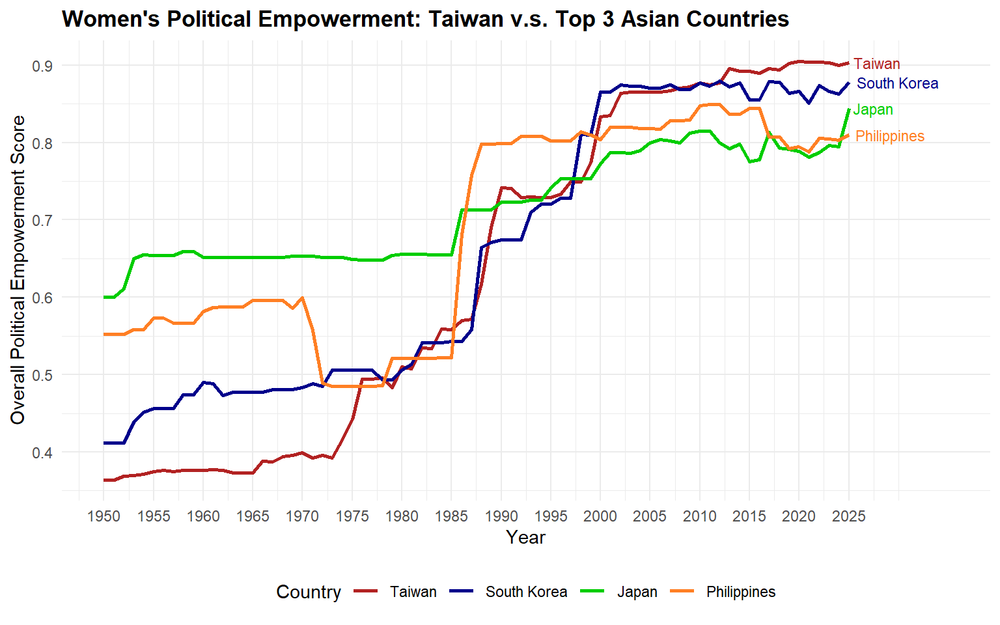
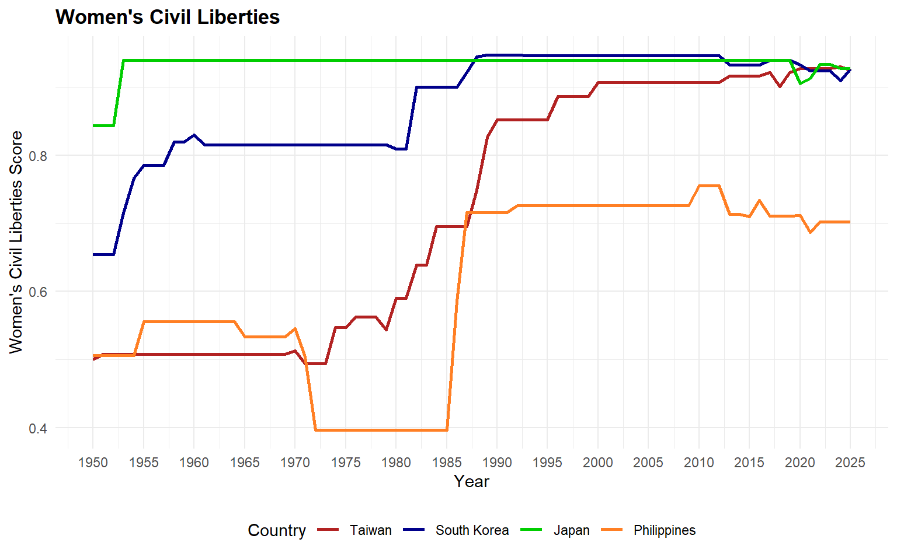
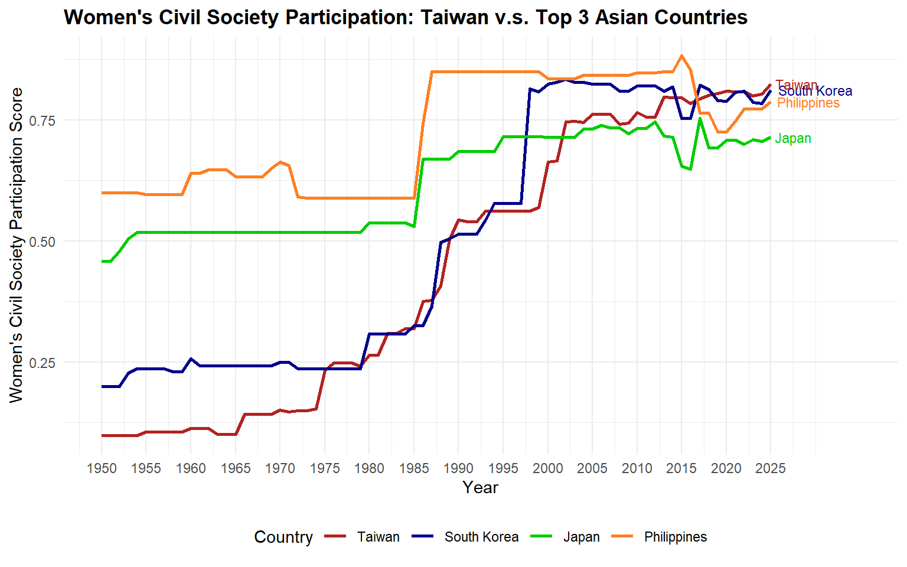
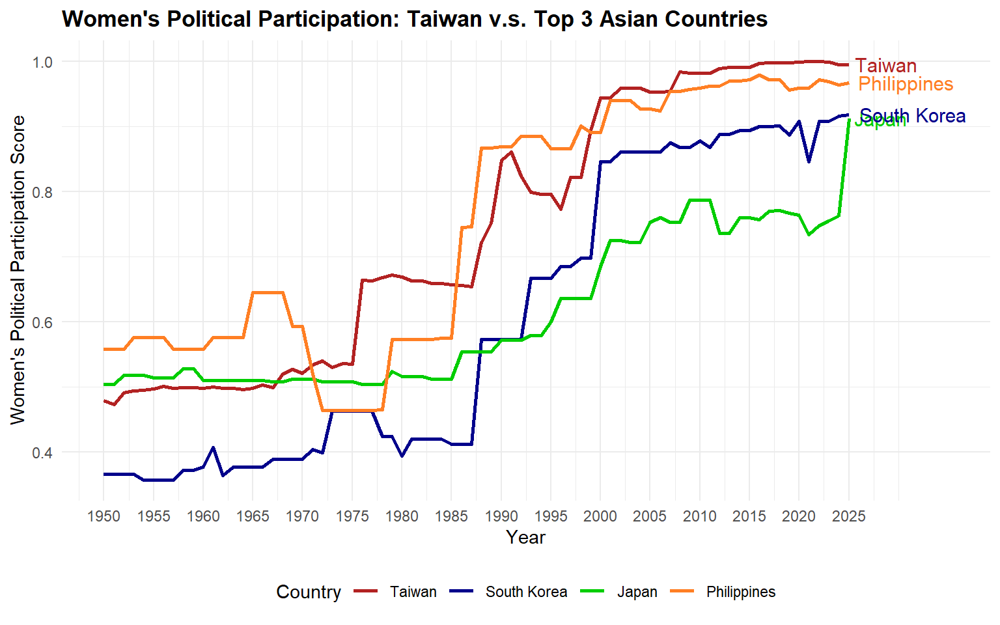

Women’s political empowerment incorporates three equally-weighted dimensions:
Fundamental civil liberties
Women’s open discussion of political issues and participation in civil society organizations
The representation of women in formal political positions.
In 2025, women’s political empowerment overall:
Taiwan: 0.903
South Korea: 0.878
Japan: 0.844
Philippines: 0.810
This and the following graphs use data from Our World in Data, Women’s Political Empowerment Index, which is produced by Varieties of Democracy (V-Dem). The index ranges from 0 to 1. It is made up of three sub-indices: women’s civil liberties, women’s civil society participation, and women’s political participation.

Civil liberties measures if women have the ability to make meaningful decisions in key areas of their lives. It includes:
Freedom of domestic movement
The right to private property
Freedom from forced labor
Access to justice.
Japan = 0.927
South Korea= 0.926
Taiwan = 0.925
Philippines = 0.702

Civil society participation asks if women have the ability to express themselves and to form and participate in groups. It includes:
Open discussion of political issues
Participation in civil society organizations
Representation in the ranks of journalists
Taiwan = 0.824
South Korea = 0.812
Philippines = 0.788
Japan = 0.715

Political participation asks if women are descriptively represented in formal political positions. It includes:
Women’s descriptive representation in the legislature
An equal share in the overall distribution of power.
Taiwan = 0.995
Philippines = 0.967
South Korea = 0.918
Japan = 0.912
| Estimate | Std. Error | t value | Pr(>|t|) | |
|---|---|---|---|---|
| Intercept | 0.203698 | 0.003672 | 55.48 | < 2e-16 |
| Civil Liberties | -0.234405 | 0.008757 | -26.77 | < 2e-16 |
| Civil Society Participation | 1.029186 | 0.010016 | 102.75 | < 2e-16 |
Residual standard error: 0.1884 on 14168 degrees of freedom
Multiple R-squared: 0.5576
Adjusted R-squared: 0.5575
F-statistic: 8929 on 2 and 14168 DF
p-value: < 2.2e-16
The p-value < 2.2e-16, so the probability of getting results at least as extreme is low. Therefore, we reject the null hypothesis. –> It is statistically significant.
There is a positive correlation between women’s political participation and civil society participation. Countries where women are more involved in civil society tend to also have more representation in formal political positions.
However, there is a negative correlation between women’s political participation and civil liberties when civil society participation is taken into account. This result could be caused by differences between countries.
Possible Explanations for Taiwan Being an Asian Outlier